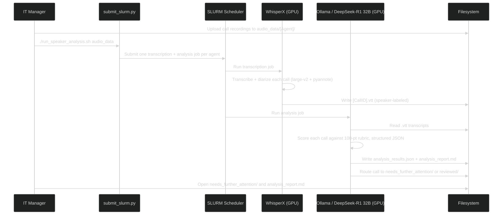

Projects / Call Center QA
Call Center QA — Transcription & Analysis
Automated transcription, speaker diarization, and AI quality-scoring for every UW IT Service Center support call — running entirely on local LLMs on UW's Hyak supercomputer.
The problem
The UW IT Service Center handles hundreds of support calls a week, but quality assurance was a manual bottleneck. A manager could realistically listen to and grade only 5–6 calls per agent assigned to them each review cycle — a tiny, hand-picked sample of everything that actually happened on the phones. The calls that most needed a second look were as likely to be missed as found.
What it does
This pipeline removes that ceiling. It ingests raw call recordings, transcribes and labels each speaker, scores every call against a structured QA rubric using a locally-hosted large language model, and automatically routes the calls that need a human's attention. Reviewers spend their time only on the calls that matter — while every call still gets graded.
Because all inference runs locally on UW's HPC cluster, sensitive call audio never leaves UW infrastructure — there's no third-party cloud API in the loop.
Architecture
The pipeline is a set of decoupled stages orchestrated by SLURM, handing data
off through the shared filesystem rather than direct service calls. The
orchestrator fans out one SLURM job per call agent, so
transcription and analysis run in parallel across the cluster. The transcription
job writes .vtt files; the analysis job later reads them — fully
decoupled, with no database and no inter-service networking beyond the local
Ollama server.


Tech stack
| Layer | Technology |
|---|---|
| Languages | Python (3.9 / 3.10 in containers), Bash |
| Speech-to-text | WhisperX (large-v2) |
| Speaker diarization | pyannote.audio (HuggingFace token) |
| LLM scoring | Ollama serving DeepSeek-R1 32B (local inference) |
| ML backend | PyTorch + CUDA 12.2 / cuDNN 8 |
| Containerization | Apptainer / Singularity (NVIDIA CUDA & NVHPC base images) |
| Orchestration | SLURM (one job per agent) |
| Compute | UW Hyak HPC — GPU nodes (gpu-rtx6k), via sbatch / Open OnDemand |
| Storage / exchange | Shared filesystem (gscratch) — .wav, .vtt, JSON, Markdown (no database) |
| Data transfer | Globus (audio upload + archival) |
How it works
- Fan-out orchestration:
submit_slurm.pyscans theaudio_data/directory and submits an independent SLURM job per call agent, parallelizing across Hyak's GPU nodes. - Transcription + diarization: WhisperX (
large-v2) converts each.wavto text, while pyannote diarization plus a custom keyword/heuristic layer labels each utterance as agent vs. user, producing speaker-tagged.vtttranscripts. - Rubric-based LLM scoring: a locally-hosted DeepSeek-R1 32B model grades each transcript against a weighted 100-point rubric and is constrained to emit structured JSON, so every score is machine-parseable rather than free text.
- Automatic triage: each call is routed by total score —
≤ 75intoneeds_further_attention/,> 75intoreviewed/— so a manager opens one folder and sees only the calls worth human review. - Human-readable reporting: alongside the raw JSON, the pipeline generates
analysis_report.mdper agent — a summary table plus a per-call breakdown of all six rubric components and the model's reasoning.
Scoring rubric
| Criterion | Max points |
|---|---|
| NetID acquisition (within 120s) | 10 |
| Issue resolution | 15 |
| Instruction quality | 15 |
| Zoom verification usage | 5 |
| Confidentiality handling | 7 |
| Overall technical support quality | 48 |
| Total | 100 |
What I built
The transcription engine (WhisperX) and the inference runtime (Ollama) are off-the-shelf — but the pipeline around them is mine. I built the SLURM orchestration layer that generates and submits one job per agent, authored the Apptainer container definitions to get WhisperX and a 32B LLM running on Hyak's GPU nodes, designed the six-component QA rubric and the prompt engineering that forces structured JSON scores, and wrote the score-based routing that triages calls into review buckets. The hard engineering wasn't any single component — it was making transcription, diarization, a large local model, containerization, and the HPC scheduler all work together reliably.
Challenges & learnings
The toughest part was systems integration: getting WhisperX, pyannote, a 32B DeepSeek model under Ollama, Apptainer, and SLURM to cooperate on Hyak — including GPU memory constraints, pre-staging the model to avoid job timeouts, and HuggingFace-token-gated diarization. I learned how to package GPU-heavy ML workloads into reproducible HPC containers, and how to design an LLM prompt that returns reliably structured output. If I rebuilt it, I'd automate populating the input folders and replace manual per-agent submission with a proper job queue for the analysis stage. The rubric is also a known limitation — calibrating its scores against human graders is the clear next step.
Results
- Works end to end — reliably transcribes, diarizes, and scores real support calls.
- Throughput: roughly 300 calls per week in production-scale runs, with ~300 calls completing in about 8 hours on Hyak GPU nodes.
- Coverage: raises QA from ~5–6 manually reviewed calls to every call in the weekly batch.
- Stakeholder response: demoed to UW ITSC leadership and management, whose reaction was to implement it as soon as possible.
- Status: not yet in production use at UWITSC; no public demo (it runs on Hyak with private call data). Score-vs-human calibration is the next step.
analysis_report.md (score table + rubric breakdown) and the sorted needs_further_attention/ vs reviewed/ folders — the most convincing artifact for this project.Acknowledgements: Dawn Mai; thanks to Kaichen and Kristen for the Apptainer containers and Hyak guidance.